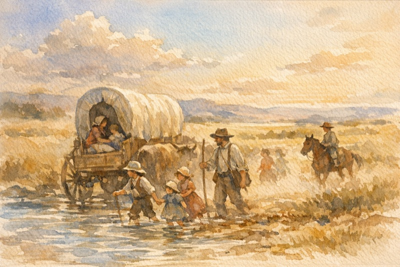
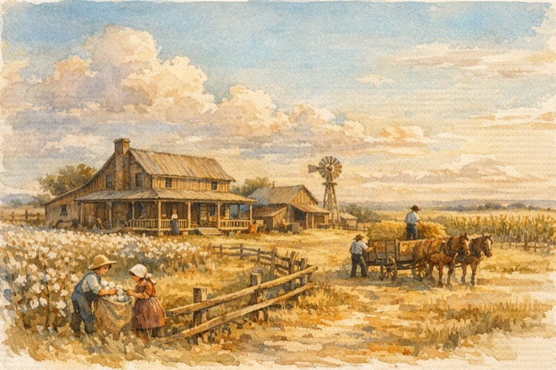

Relationship: 3rd great-grandfather (Mowery line)
Moses Mansfield Mowery was born on 1 November 1822 in Knox County, Tennessee, likely the third of at least ten children born to Lewis R. Mowery and Elizabeth "Betsy" Lisbee1. His middle name, Mansfield, was later passed down to one of his sons, suggesting family or ancestral significance.
The Mowery family moved to Bradley County, Tennessee around 18372, and Moses came of age there. In about 1845, he married Margaret Elizabeth Witt, a Tennessee native3. Together they began a large family and soon joined the westward migration to Texas.

By 1853, they had passed briefly through Alabama and arrived in Red River County, Texas, settling on newly acquired farmland4.
Moses is listed among the original landowners of Red River County5, establishing himself as a farmer. The 1860 census shows him in Red River County with real estate and a growing family6. Around 1870, Moses moved a few miles north to Lamar County, near the town of Milton, where he spent the rest of his life7. He served as postmaster of Milton in the 1870s, a position later held by his son L. D. (Lewis Daily) Mowrey in the 1880s.
Moses and Margaret had ten children, many of whom carried family names8:
These children and their descendants helped build the Mowery name into the fabric of Lamar County.
Moses was described in an 1889 Texas biography as "a substantial citizen of the county"9. Margaret died sometime before 1900—the 1900 census lists Moses as a widower10. By 1904, Moses was living with his daughter Sarah and son-in-law John Sain in Deport, Texas. He passed away on 29 August 1904 — the same day as his son Samuel S. Mowrey, who also died in Lamar County at age 3711. Multiple independent sources confirm this shared death date; it is not a data-entry error. The cause of their simultaneous deaths is unknown; no newspaper obituary, accident report, or death certificate has been found despite extensive searches. Both are believed to be buried in Milton Cemetery (graves unmarked)12.
While earlier researchers were uncertain of his parentage, multiple sources now confirm Moses was indeed the son of Lewis R. Mowery and Elizabeth (Lisbee) Mowery13. His brother, Pleasant A. Mowrey, is documented in Texas history as a son of Lewis and Elizabeth14, and Moses's children carried the Lisbee family name (rendered as "Lusby" in later records) and "Lewis" as middle names.
Note for researchers: The surname appears as both "Mowery" and "Mowrey" in various historical records, representing common spelling variations of the same family name.
The family's journey from East Tennessee to the Red River valley reflects a common pioneer path — and Moses helped lay the foundations of the community that followed.
For detailed lineage documentation and ancestry confirmation, see: Moses Mansfield Mowery (1822–1904) – Lineage and Ancestry Confirmation (PDF)
Find a Grave record confirms birth date as 1 Nov 1822 in Knox County, TN; 1900 U.S. Census, Lamar County, TX; shows Moses born Feb 1822 in Tennessee, both parents born in TN.↩
Family and census records indicate the Mowerys moved from Knox Co. to Bradley Co., TN by 1837; see 1840 U.S. Census, Bradley Co.↩
Marriage year inferred from birth of first child (ca. 1847); Margaret born in TN, per 1850 census.↩
Family migration path inferred from birthplace of children: TN → AL (ca. 1851) → TX by 1853; also referenced in Biographical Souvenir of the State of Texas, 1889.↩
Local histories list Moses Mowery among Red River Co.’s earliest landowners.↩
1860 U.S. Census, Red River Co., TX; Moses Mowery, age 37, farmer, real estate value $300.↩
1870 U.S. Census, Lamar Co., TX; and later presence in Milton community until death.↩
Names listed in Biographical Souvenir of the State of Texas, 1889, p. 622.↩
Ibid.; described Moses as a “substantial citizen” of Lamar County.↩
1900 U.S. Census, Lamar Co., TX; Moses listed as widower. Margaret died c. 1898–1899. The death year "1904" appearing in some family trees is a propagation error (likely confused with Moses's death year).↩
Multiple independent sources (WikiTree, Geni, Lamar County death/burial index, compiled genealogies) confirm 29 Aug 1904 for both Moses and Samuel. This is not a data-entry error—the shared date is verified. No death certificate, obituary, or contemporary newspaper account has been located despite extensive searches. Texas began statewide death registration in 1903 but early compliance was spotty.↩
Lamar County cemetery surveys and family tradition place Moses, Margaret, and Samuel in Milton Cemetery, though graves are unmarked.↩
Based on triangulated evidence from children's naming patterns, proximity to known siblings, and historical records.↩
Biographical Souvenir of the State of Texas, p. 622; confirms Pleasant A. Mowrey as son of Lewis and Elizabeth (Lisby) Mowrey.↩